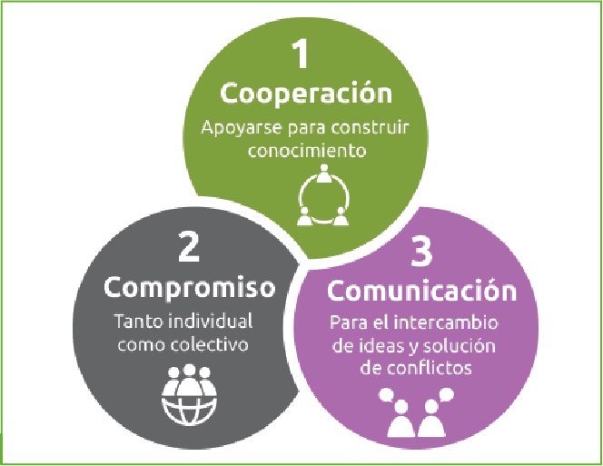
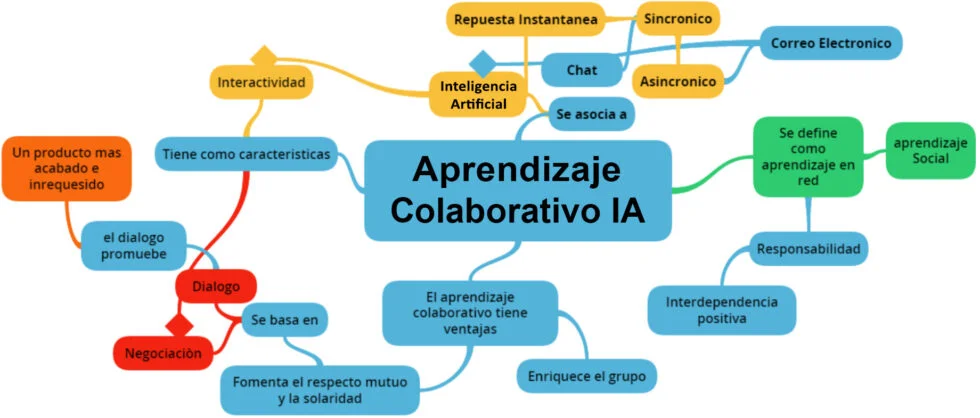

Esta investigación virtual, realizada entre 2020-2021 como parte del proyecto EDUATRIC, buscó analizar las percepciones de estudiantes universitarios sobre los usos, potencialidades y desafíos de la Inteligencia Artificial en su formación inicial y en la enseñanza. Se utilizó una metodología mixta: un enfoque cuantitativo descriptivo mediante encuestas y un complemento cualitativo con preguntas abiertas y portfolios digitales. El análisis cualitativo implicó una codificación en múltiples etapas. El estudio pretende que el alumnado adquiera habilidades tecnológicas con IA para afrontar los retos educativos futuros, promoviendo el uso de la competencia digital y la creación de recursos educativos abiertos basados en IA.
La muestra estuvo compuesta por 76 estudiantes del 2º curso de la asignatura de TIC aplicadas a la educación (grupo de mañana) del Grado de Educación Infantil de la Universidad de Extremadura, siendo el 97.4% mujeres y 2.6% hombres. Cabe destacar que este estudio es de carácter exploratorio y la muestra no es representativa con la población objeto de interés, tal y como se observa en otras investigaciones ligadas a experiencias tecnológicas con alumnado universitario (Pérez-Ortega, 2017; Moreno-Martínez y Leiva, 2016; Ruiz-Rey, 2016). La edad de las participantes oscilaba entre los 19 y 30 años, concentrándose el 96% de la muestra en el tramo de edad de 19-23 años. El 98.7% no había participado previamente en ningún proyecto de Inteligencia Artificial y manifestaba desconocer el potencial didáctico de ésta. Las participantes fueron divididas en tres grupos (A, B y C) para el desarrollo del seminario.
El procedimiento seguido para el desarrollo de la actividad fue el siguiente: En primer lugar, a través de Zoom, se explicó al alumnado el concepto de IA y Machine Learning y se le instó a reflexionar acerca de la presencia de la IA en nuestra vida cotidiana y su potencialidad en el ámbito educativo. Posteriormente, la docente presentó la herramienta de creación de proyectos de Machine Learning “LearningML” y compartió algunas directrices a tener en consideración a la hora de usar la herramienta para diseñar recursos destinados al alumnado de Educación Infantil. La selección de la herramienta de trabajo vino marcada por el idioma de ésta (español), la opción de no tener que registrarse (habitual en este tipo de herramientas) y por la experiencia profesional previa del desarrollador de la herramienta, Juan David Rodríguez-García del Instituto Nacional de Tecnologías Educativas y de Formación del Profesorado (INTEF). Tras su diseño, Rodríguez-García et al.(2021) analizaron si era una herramienta apropiada para la enseñanza de Machine Learning (validez instruccional) a niños de entre 10 y 16 años, y también si era fácil de usar y resultaba atractiva (validez aparente). Los resultados de este estudio avalan ambas hipótesis y muestran como el alumnado participante, no solo comprendió los fundamentos de ML gracias al uso de la herramienta, percibiendo que era entretenida y fácil de usar, sino también que fueron capaces de desarrollar sus propios proyectos de Machine Learning.
Tras ello, el alumnado trabajó de manera grupal, 3-5 integrantes, para diseñar dos proyectos de IA, uno textual y otro de imágenes, sobre uno de los contenidos didácticos sugeridos por docentes en activo de la etapa de Educación Infantil. En una primera fase, el alumnado introducía por dimensiones las imágenes o texto relacionado con el contenido que querían abordar. Una vez procesada la información por la máquina, accedían a un entorno de programación similar a Scratch que presenta la herramienta. Alguno de los juegos resultantes permite que el alumnado enseñe una tarjeta (imagen) y el personaje le responda con su identificación (color, nombre…). Otra actividad diseñada por el alumnado universitario, consistía en que el personaje, tras explicar el contenido, hacía preguntas relativas al mismo y el alumnado debía enseñar la tarjeta que se identificase con la respuesta. Ambas opciones son muy interesantes para trabajar el vocabulario con el alumnado de Educación Infantil, tanto en el colegio como de manera autónoma, pues el programa le proporcionará un feedback que le permita seguir aprendiendo.  Un recurso de gran interés en una educación marcada por la virtualidad motivada por la COVID-19 y que contribuye a evitar desigualdades en el acceso a la información al estar en abierto.Durante el transcurso de la actividad las alumnas planteaban sus dudas en el foro habilitado en el aula de Moodle y eran respondidas por sus compañeras o la docente. Así mismo, se pusieron a su disposición videotutoriales y otros recursos de interés relacionados con la herramienta de trabajo seleccionada. Tras el desarrollo de la actividad, los recursos fueron compartidos en su totalidad en el espacio virtual creado para su grupo en Wakelet, a fin de que todo el alumnado pudiera acceder a ellos y observar los programas desarrollados por sus compañeros y compañeras para aprender de ellos. De igual modo, el alumnado difundió sus creaciones en la red social Twitter (@eduatric) y en la página web del proyecto (EDUATRIC) para contribuir a la construcción del aprendizaje abierto al cual aludíamos en la introducción de este trabajo en el marco de la Educación 4.0.Por último, el alumnado dio respuesta al cuestionario y recogió sus reflexiones en el porfolio digital que entregaron al finalizar el semestre.
Como instrumentos de recogida de información, para valorar el grado de utilidad de la IA en la formación superior se elaboró un cuestionario (Tabla 1), a partir de Martínez y Fernández (2018); Moreno-Martínez (2019); Barroso et al. (2016) y Fernández-Robles (2017), con datos sociodemográficos, 25 ítems en escala Likert (1 totalmente en desacuerdo y 5 totalmente de acuerdo) y 5 preguntas de carácter abierto en torno a su experiencia académica y las ventajas e inconvenientes del uso de la IA en la etapa de Educación Infantil. La fiabilidad se calculó mediante el coeficiente alfa de Cronbach para todos los ítems. La consistencia total del cuestionario es satisfactoria (0.930) atendiendo a Gutiérrez-Castillo et al. (2016) y Bisquerra (2014). Se observa que no mejoraría con la eliminación de algún ítem del cuestionario. Así mismo, el alumnado recogió sus aprendizajes y reflexiones en el porfolio digital que entregaron a las docentes al finalizar el semestre. Para el análisis cuantitativo de los datos se calcularon estadísticos descriptivos empleando para ello SPSS. Para el análisis cualitativo, se codificaron las respuestas con el programa ATLAS-ti.